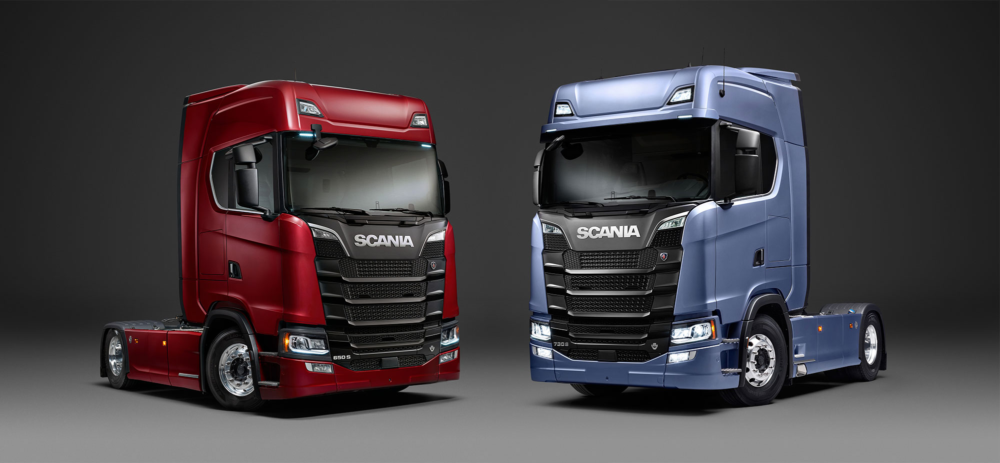
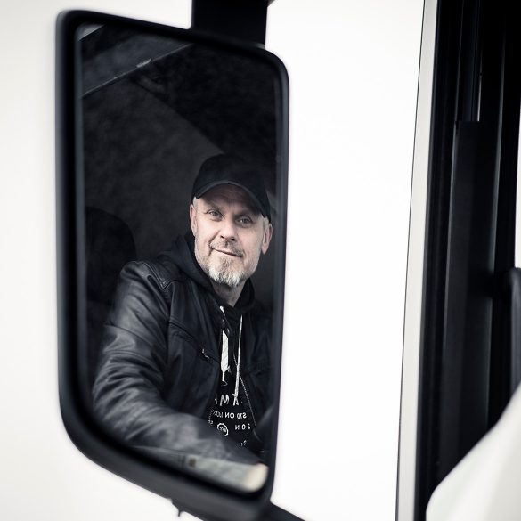
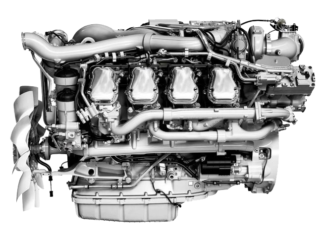
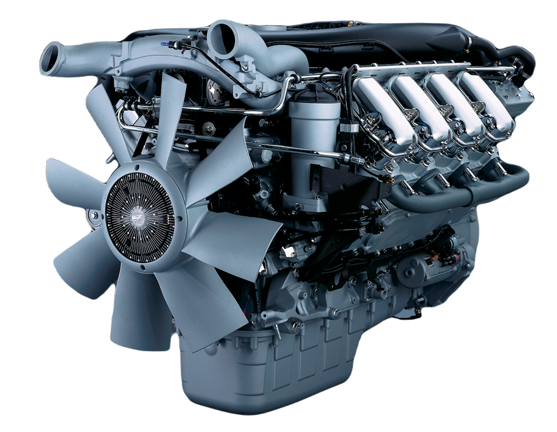
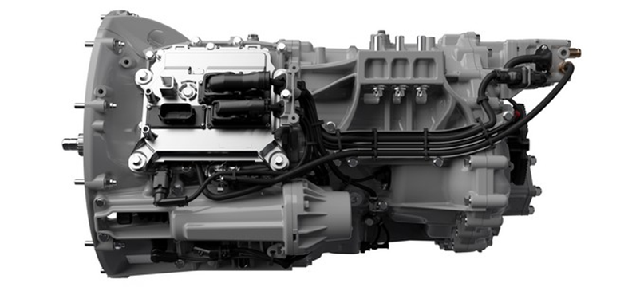
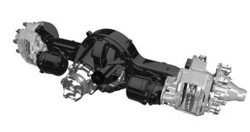
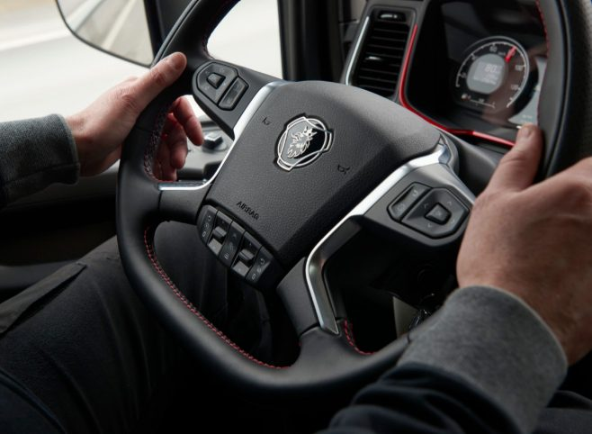
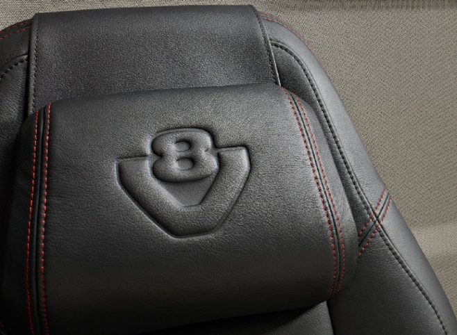
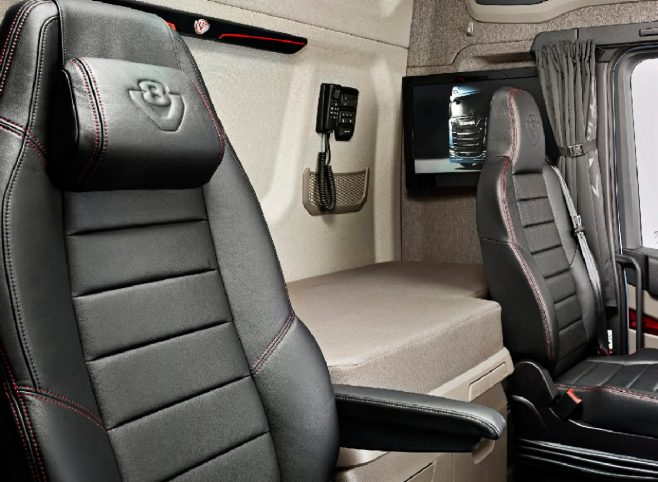

Emoção, Razão e Força! O sonho de todo caminhoneiro
O Mais Forte do Mundo
A fantástica experiência de direção com o novo trem de força Scania V8, coexiste com o excelente desempenho maior tempo de atividade e eficiência de combustível.
E, graças a atualizações no sistema de pós-tratamento de gases e no turbo compressor, a redução do consumo de combustível foi de até 6% em relação aos motores da geração anterior.

CONDUZA SEUS NEGÓCIOS
A Scania está na vanguarda da tecnologia para motores V8 de alta potência. Isso combina uma experiência fantástica para os motoristas com alto desempenho e alta eficiência, impulsionando sua empresa.
Potência total
Fornece a potência necessária para o trabalho. Com uma excepcional economia operacional.
MUITO IMPRESSIONADO
"Dirigi caminhões V8 com os mais diversos motores, mas este só consome 37,4 litros por 100 quilômetros com carga média."
OLE KARLSSON - KAJ INRIKES, SUÉCIA

O equilíbrio da potência
O Scania V8 é o comparativo de alto desempenho. Ele é famoso pela potência líder da classe e pelo torque infinito. Porém, esse desempenho também se soma a uma confiabilidade sólida como rocha, à longevidade e à economia operacional – e isso faz todo o sentido em termos comerciais.
Alta eficiência, Confiabilidade e Potência
Cumprir com seus compromissos e programação são necessidades absolutas no setor do transporte. Com a confiabilidade e a velocidade de um Scania V8, a sua empresa só tem a se beneficiar.
EURO 5
Definição do novo padrão
O novo V8 tem muito mais potência. O torque vem em rotações mais baixas, o que torna possível especificar uma relação do eixo traseiro mais rápida e operar em rotações mais baixas do motor, o que, naturalmente, economiza combustível. Tudo isso, é claro, sem comprometer a dirigibilidade.
V8 - 620 hp de pura potência como você nunca viu.

A Frente Da Tecnologia
O Scania V8 é adaptado para necessidades específicas e criado para melhorar sua economia operacional total. Isso o torna o investimento perfeito para levar o negócio adiante.
Uma Grande Variedade de Motores V8
A nova geração de motores V8, que inclui o motor de 770 cv de potência, a Scania produz o caminhão mais potente do mundo.
Com a nova geração de motores V8. A novidade tem versões com 530 cv, 590 cv, 660 cv e 770 cv de potência.
A nova geração de motores V8 da Scania são caminhões direcionados às operações rodoviárias de longa distância. E também em atividades pesadas, seja de uso misto ou off-road.
O propulsor recebeu 70 novas peças. O atrito de peças móveis foi reduzido. Além disso, a taxa de compressão aumentou e o sistema de pós-tratamento foi aprimorado. Isso é resultado da adoção de um novo dispositivo de gerenciamento eletrônico do motor (EMS).

Os novos Scania V8 contam apenas com o sistema de pós-tratamento SCR. Para atender as leis cada vez mais rígidas de controle de emissões, várias fabricantes utilizam dois sistemas. A maioria dos modelos da concorrência traz o SCR e o EGR.
A gama atualizada de motores V8 Euro 6 foi aprovada para funcionar com combustíveis renováveis.
Caixa de Cambio
A nova linha de caixas de câmbio passa a contar inicialmente com a versão G33CM, para modelos extrapesados equipados com a nova geração de motores V8 ou com as versões de 13 litros de 500 ou 540 cv.

A nova geração de caixas de câmbio Scania se destaca por uma série de inovações, como por exemplo, construção em alumínio, material que garante menores dimensões e redução de peso de até 60 kg, três freios de eixo no total que proporcionam mudanças de marcha rápidas, suaves e precisas, nova relação de marcha mais econômica e intervalos de manutenção aprimorados, menor desgaste interno. Graças ao polimento das engrenagens, uso de óleo MTF de baixa viscosidade e a presença de um sistema de cárter seco que reduz respingos de óleo e perdas, as perdas internas provocadas pelo atrito foram reduzidas em cerca de 50%.

As novas caixas de câmbio são mais curtas e mais robustas, graças a presença de apenas dois sincronizadores (em comparação com sete), entre a divisão da faixa baixa e alta, eixos capazes de lidar com mais torque e engrenagens mais largas com maior durabilidade e capazes de suportarem mais cargas.
Completando a lista de atributos da nova geração de caixas de câmbio Scania, está a significativa redução do ruído, um pré-requisito para atender a regulamentações futuras. Segundo a montadora sueca, a redução média de ruído é de até 3,5 dB, número bastante considerável considerando na escala de dB é logarítmica.
UMA AFIRMAÇÃO DE ESTILO
O Scania V8 é um caminhão para aqueles que exigem e esperam muito mais. Mesmo que o som e a potência não sejam óbvios o suficiente, ninguém passará batido pelo estilo do V8.
Dirigir um Scania V8 significa que você está dirigindo um caminhão premium com um motor premium. E isso também deve ser bem visível
A Afirmação Definitiva
Os caminhões Scania V8 vão muito além da simples potência. Eles são o máximo em termos de qualidade e prestígio. O exterior e interior têm toques de design exclusivo do V8, estabelecendo novos padrões de conforto e refinamento.
ERGONOMIA
EFICIÊNCIA E CONFORTO
Bem-vindo a uma maneira melhor de dirigir. O poderoso V8 transforma cada subida, cada ultrapassagem, cada horário apertado em algo tranquilo e prazeroso. O caminhão faz o trabalho duro, para que você possa permanecer confortável, alerta e totalmente no controle do seu trabalho.

DESIGN INTERIOR
Couro e costura vermelha
Entre as opções internas estão bancos de couro preto canelado com o símbolo do V8 estampado e uma costura vermelha. O volante de direção de couro preto com costura vermelha leva a experiência de dirigir a outro patamar.

Conforto
É um modo de vida
O V8 Scania é a última palavra em design premium. Todos os aspectos de bancos, acomodações e armazenamento foram aperfeiçoados. O resultado: um interior impecável que integra o conforto de uma casa com total praticidade. A vida na estrada nunca foi melhor.
